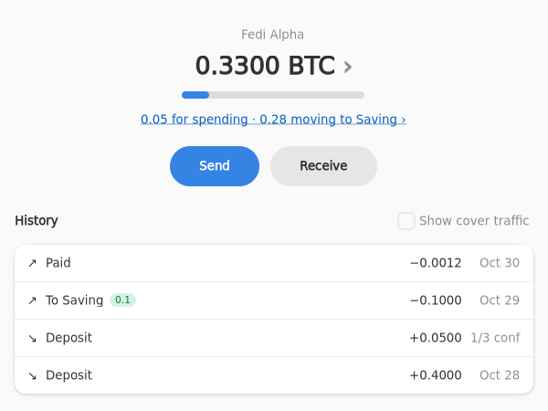

Fedimix
Receive privately over time, withdraw common-denomination UTXOs once the anonymity set is large enough.
1
Deposit into Spending
Money lands in Spending as Fedimint ecash.

2
The surplus is queued
Above Spending's target, coins are split into common denominations and queued.

3
Wait while the anon set grows
Each coin's anonymity estimate rises as others deposit. It leaves after a random, Poisson-timed wait, so timing leaks nothing. Typical exit within about a day.

4
Automatic exit to Saving
The coin lands in cold Saving tagged with its anon set. Need it now? Exit early, and it is labelled as such.

5
Change flows back into ecash
Sends from Saving pay their change back into Spending, so the loop closes.

Demo video
4 min. First 2:16 is the real app on a local regtest federation. The rest, the exit flow, is simulated and says so on screen. Exits only: exits-demo.mp4
Status, honestly. Hackathon prototype, not for real funds. The exit flow (steps 2 to 4) runs on the demo backend and is simulated; the real backend's exits are being finished. Deposit, sends with change into Spending, and refill run for real on a local regtest federation with worthless coins. Nothing has run on signet or mainnet.